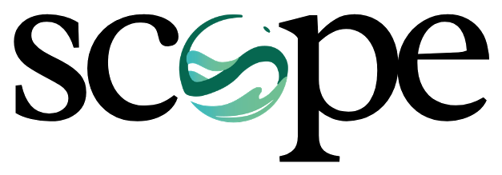
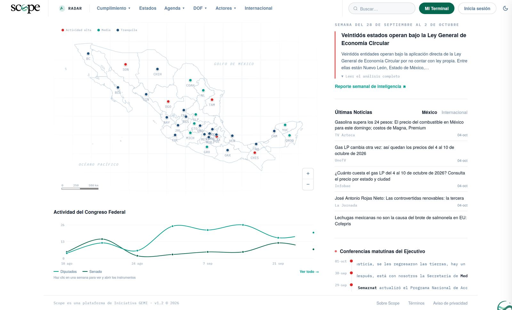

Observatorio de Economía Circular
Un espacio institucional para seguir el desarrollo de la economía circular en México.
Régimen de economía circular por entidad
entidades con armonización publicada
El transitorio cuarto dio a los congresos locales 180 días naturales. Venció el 19 de julio de 2026. Ciudad de México y Puebla aprobaron a tiempo y publicaron en agosto.
entidades sin ordenamiento propio, donde rige directamente la Ley General
De la ley armonizada a la entidad sin iniciativa: cada cuadro es una entidad, ordenada por su avance. Toca una para abrir su ficha.
iniciativas de ley en los congresos locales
Cada punto es una iniciativa, con promovente, comisión, nivel de seguimiento y su documento oficial.
de las 15 entidades más manufactureras no tienen ley propia
Próximas ventanas legislativas y regulatorias
Votaciones, dictámenes e instrumentos federales pendientes, con su fundamento.
Notas recientes sobre economía circular
Monitoreo diario de medios nacionales y estatales de Scope. Pasa el cursor para detener la lista.
Información y participación
Déjanos tus datos y te contactamos: para participar en las sesiones, recibir el Pulso del Observatorio o conocer Scope, la plataforma que lo hace posible.

El Observatorio funciona con Scope
Scope es la plataforma de inteligencia regulatoria ambiental de Iniciativa GEMI. Da seguimiento diario a legislación federal y estatal, Congreso, NOMs y agenda regulatoria.

Tablero de las 32 entidades
Ordena por cualquier columna. Toca una fila para abrir su ficha.
Comparación entre entidades
Elige dos entidades. Cada fila muestra el valor de cada una y su lugar entre las 32.
Línea de tiempo
Hasta 8 entidadesGráfica por métrica y grupo de entidades
Descárgala en CSV o como imagen.
Asuntos de economía circular en el Congreso de la Unión
Iniciativas, puntos de acuerdo y dictámenes sobre economía circular, residuos, plásticos y envases. Fuente: Sistema de Información Legislativa (SIL) de la Secretaría de Gobernación. Se actualiza todos los días.
Iniciativas en los congresos locales
Reformas publicadas desde la Ley General
Diez reformas estatales publicadas desde el 19 de enero de 2026 que tocan la economía circular. Dos se declaran de armonización.
Reformas desde el 19 de enero de 2026
Armonizaciones publicadas
Reformas a otras leyes con economía circular
Ley General de Economía Circular
Publicada el 19 de enero de 2026. Lo que ya opera, lo que falta y de qué depende. Texto vigente · Cámara de Diputados ↗
Instrumentos de la Ley General
Próximas ventanas
Polos de economía circular
Acuerdo Nacional de Municipios
Normas en paralelo y NOMs aplicables
Método de registro y verificación
Ningún registro entra sin haber leído su articulado en el documento oficial. La prensa contrasta; nunca sustituye al registro.
Lectura al corte
Cómo se cuenta
Regímenes
Contraste en prensa por registro
Documentos oficiales citados
Gacetas, diarios de los debates, periódicos oficiales, registros parlamentarios y compilaciones. Busca por entidad, promovente o dominio.
Acerca del Observatorio
Un mecanismo técnico, plural y permanente de colaboración, coordinado por la Comisión Especial de Economía Circular y Desarrollo Empresarial del Senado de la República. Conecta conocimiento, regulación, experiencias y buenas prácticas para que cada participante los aplique en su ámbito: legislativo, público, empresarial, académico o social.
Fundadores
El Observatorio no tiene personalidad jurídica propia ni sustituye atribuciones del Senado. La calidad de fundador no modifica la rectoría de la Comisión.
Integración de la Comisión
Integración oficial · Senado ↗LXVI Legislatura. Instalada el 11 de febrero de 2026. Comunicado ↗ Micrositio ↗
Según el sitio oficial del Senado, consultado el 4 de octubre de 2026.
Cómo funciona
Cómo participar
Para proponer una aportación o la participación de tu institución, o contacta a la Comisión en su micrositio ↗